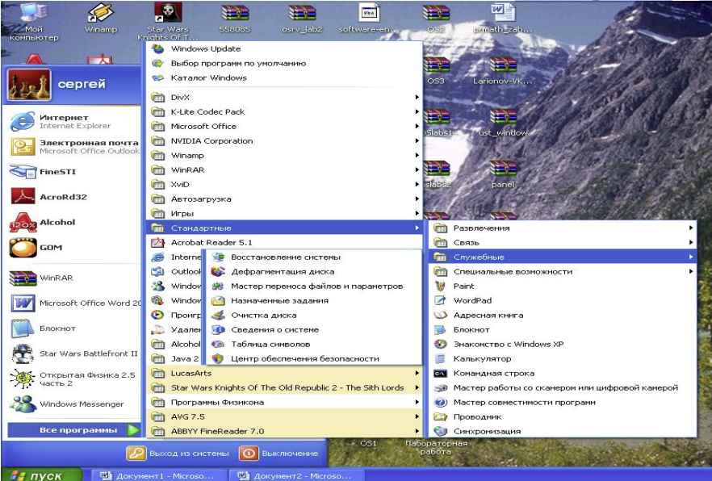
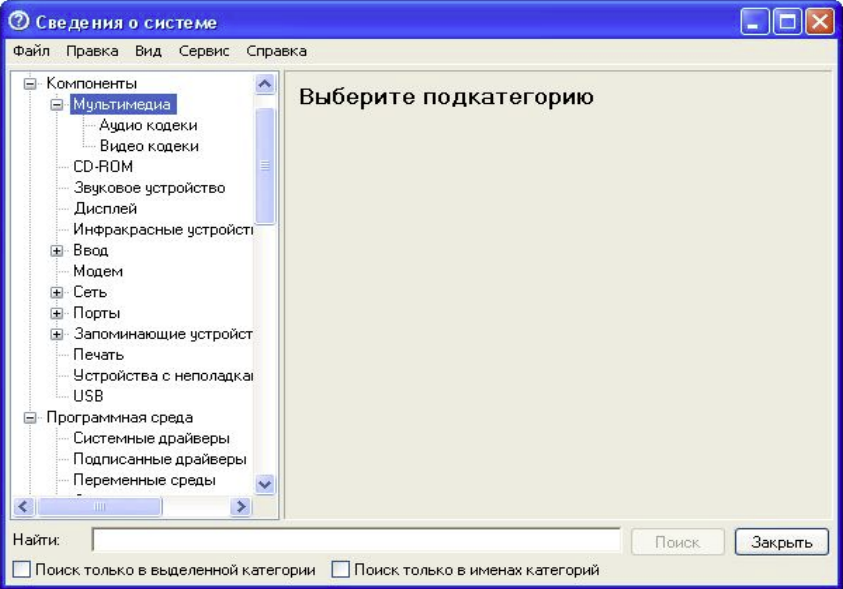
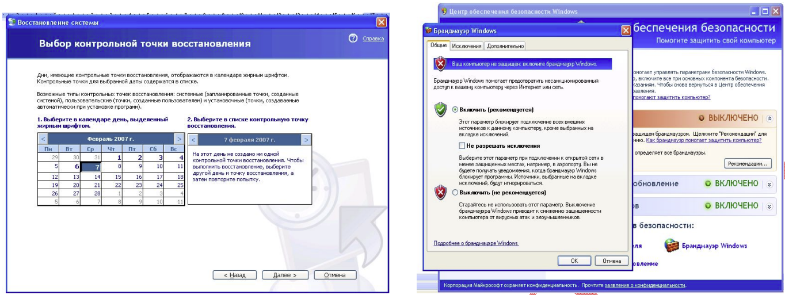
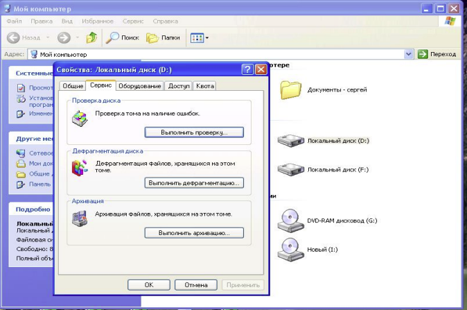

Практическая работа №3
Тема: Дефрагментация жёсткого диска в операционной системе Windows XP
Цели работы:
Для запуска данных программ необходимо: ПУСК → Стандартные →Служебные
При просмотре сведений о системе появится следующее окно :
В котором белее детально отображаются все интересующие нас сведения о системе.
Для восстановления системы необходима контрольная точка, желательно чтобы их было несколько. При восстановлении системы будут восстановлены только системные программы. Документы и программы установленные после контрольной точки будут потеряны.
Из описания технологии хранения файлов следует, что файл может быть записан как в непрерывную последовательность кластеров, так и разбросан по кластерам, находящихся на различных дорожках. В последнем случае говорят, что файл фрагментирован. Сама по себе фрагментация не является ошибкой, но если значительное число файлов на диске фрагментировано (сильно фрагментированный диск), то это может сказаться на быстродействии всей системы. Это происходит за счет увеличения количества операций позиционирования блока головок жесткого диска при операциях чтения/записи.
